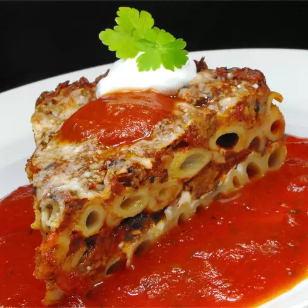

Back to Home
Delicious Pasta

Description
This delicious pasta dish is the perfect blend of simplicity and flavor.Made with tender noodles, a rich tomato-based sauce, and aromatic herbs, it's a go-to meal that satisfies any craving. Whether you're cooking for yourself or for family and friends, this recipe is guaranteed to impress without much effort.
It's versatile enough to be served with meat, vegetables, or even on its own. Perfect for lunch, dinner, or meal prep, this pasta recipe brings comfort and taste to your plate every single time. Plus, it's quick to prepare and budget-friendly — ideal for busy weekdays!
Ingredients
- 1 pound uncooked pasta
- 1 pound ground beef
- 1 onion, chopped
- 6 ½ cups tomato pasta sauce
- 6 ounces provolone cheese, thinly sliced
- 1 ½ cups sour cream
- 6 ounces mozzarella cheese, shredded
- ½ cup grated Parmesan cheese
Steps
- Bring a large pot of lightly salted water to a boil. Cook pasta in boiling water until al dente. Drain.
- Meanwhile, cook ground meat and onion in a skillet over medium heat, stirring frequently, until meat is browned.
Stir in pasta sauce, reduce heat, and simmer for 15 minutes.
- Preheat oven to 350 degrees F (175 degrees C). Lightly grease a 9x13 inch baking dish.
Layer the ingredients in the prepared baking dish as follows: half of the cooked pasta, all the provolone cheese, all the sour cream, half of the sauce mixture, remaining pasta, mozzarella cheese, and remaining sauce mixture. Top with grated Parmesan cheese.
- Bake in preheated oven for 30 minutes, or until bubbly.
Back to Home